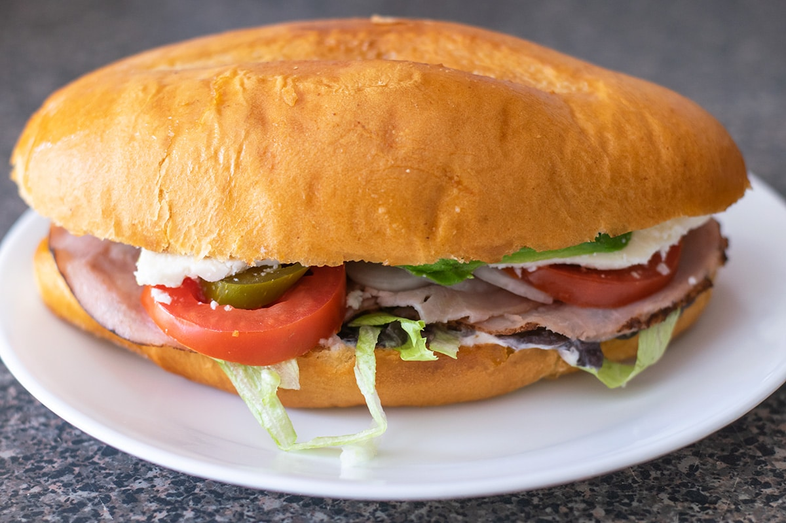

Tortas

Description
This recipe is a traditionally used recipe amongst Mexican people.
Ingredients
- Bolillo
- Jamon
- Queso
- Hitomate
- Lechuga
- Chiles Jalapeno
- Mayonesa
Steps
- Spread mayonesa on the bolilo buns and place on griddle.
- Place jamon on griddle.
- Place queso on top of jamon and then flip over.
- Place both jamon and queson on the crispy bolilo.
- Add your sliced hitomate, lechuga and chiles jalapeno on the bolilo.
- After torta is put together, place it back on the griddle to get a crispy finish then enjoy.